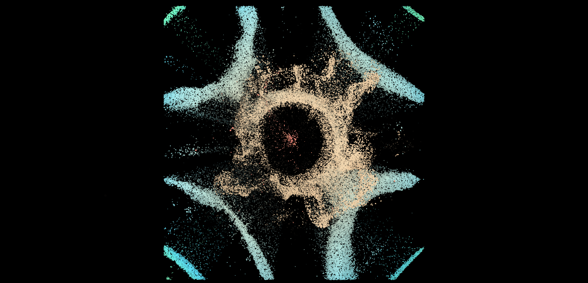
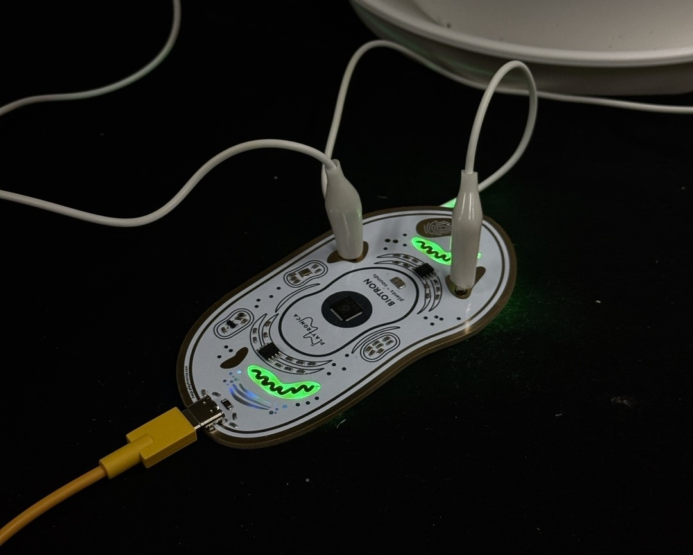
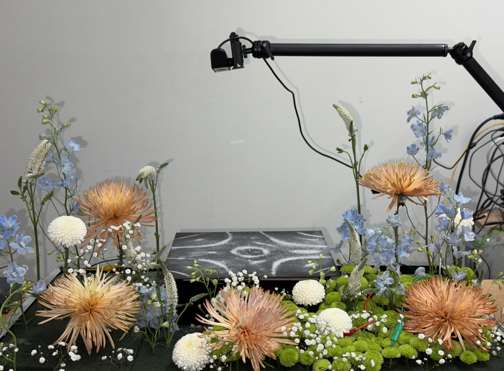

동심(童心)
이면의 소리 : 감각의 확장
우리는 사회를 인식할 때 표면적인 정보에만 의존해, 이면 속에 숨어있는 신호를 놓치고 사회를 편향되게 이해할 때가 있습니다. 본 작품은 식물을 통해 사회를 은유적으로 표현하며, 겉으로 드러나지 않는 수많은 신호가 존재하고 흐른다는 사실을 드러내고자 합니다. 관객은 이 과정에 직접 개입하며, 감춰진 신호를 인지하고 해석하는 경험을 하게 됩니다.

식물은 끊임없이 미세한 전기적 리듬을 발산하지만, 이는 인간의 감각으로는 감지되지 않습니다. 이는 곧 사회 속 보이지 않는 정보와도 맞닿아 있습니다.

관객이 식물에 접촉하면, MIDI 컨트롤러 Biotron이 식물의 바이오리듬을 감지해 소리로 변환합니다. 생성된 소리는 다시 사이매틱스 원리에 의해 물리적 패턴을 형성하게 됩니다. 이 과정을 웹캠을 통해 실시간 인식하며 식물이 만들어낸 MDID신호 함께 반응성 시각적 이미지로 확장합니다. 관객은 이 흐름 속에서 보이지 않던 생명 활동 속에서 시작해 사운드, 물리적 형태, 이미지까지 순차적으로 감각과 인식의 범위가 확장되는 과정을 직접 체험하게 됩니다.

본 작품은 기술을 통해 일상 속에서 볼 수 있는 단순한 매개로부터 감각과 인식의 범위를 확장하며 관객에게 익숙한 사회의 표면을 넘어, 그 이면에 흐르는 신호들을 바라보고 경험하는 새로운 인식의 가능성을 제안하고자 합니다.